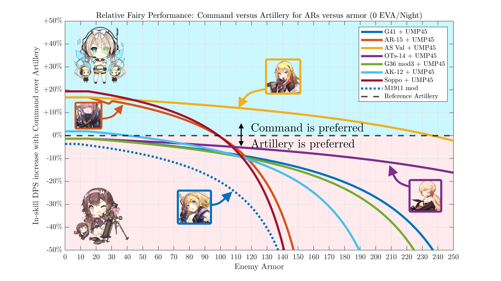
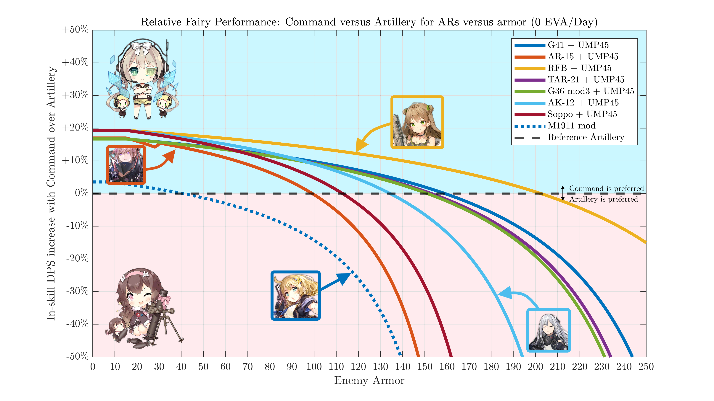

For the plots alone, see this album.
Many night missions in story and events have a nice mix of SF armor, unarmored, and bosses. With the fog of war and random movement, you'll often need a team that can handle all of these. With their ability to wield PEQs and having good survivability, ARSMG squads are a common pick.
So, you get your night ARSMG team put together and are ready to deploy - but what fairy do you use? Command is normally the best for DPS, but PEQs hurt your crit rate and crit damage is less useful against high armor. These plots show at what level of armor Command falls off relative to Artillery, or what exactly "high armor" is for ARs.

With the base 20% crit rate most ARs have at night, Artillery will pretty much always be better than command at 0 armor (although the difference starts small - in the range of 5%). As armor increases, command drops off more and more.
On the other hand, a few ARs (AR-15, Sopmod, AS Val) can use a critscope and still manage to hit their enemies. In that case, without armor, Command is substantially better. Without major FP buffs, Artillery starts to look good past 100 armor. With AS Val, Command is basically always preferred due to her high damage buff.

At day, ROF ARs in this configuration start to prefer Artillery around 100 armor wile FP-based ARs can last until 140-200 armor. Keep in mind that, while Artillery may be better than Command versus 200 armor, that's high enough armor that ARs probably aren't the right tool for that job anyways. More FP buffers beyond UMP45 will also extend the viability of command.
Comments:
All fairies are assumed to be 5* with Damage 1 as a sort of middle ground talent. In-skill DPS only as no AR is doing anything pre-skill to armor (6P62 isn't real). M1911 mod is included for her potential use in cheap farming/early night chapters. Sopmod's curve should be taken with a grain of salt - her grenade damage is usually more important than her direct-fire damage, and that's not affected at all by crit damage buffs. I'm using Command and Artillery here as they're the big basic straight DPS fairies. Things get more complicated when accuracy comes into play or the many fairy skills. A combat sim will be the most helpful for specific optimizations - these plots are intended to give you a general idea of how armor affects fairy choice.